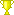

Kisakone
Käyttäjän kellonkieli kilpailut
SFL:n kilpailut löytyvät Disc Golf Metrixistä
Suomen frisbeegolfliiton kilpailujärjestelmä on siirtynyt Disc Golf Metrixiin. Lisätietoa linkistä: Suomisport, Metrix ja Kisakone UKK - Usein Kysytyt Kysymykset
Liiton kilpailut Metrixissä lyhytosoitteella: https://sfl.discgolfmetrix.com/
Käyttäjän kellonkieli kilpailut - 43
| Nimi | Paikka | Taso | Luokat | Aika | ||
|---|---|---|---|---|---|---|
| Finnish Masters | Peurunka DGP, Laukaa | Erilliskilpailu | MP40 MP50 MP60 MP70 FP40 FP60 | 15. - 16.06.2013 |  Tulokset 4. sija | |
| Perämeri Open III | Meri-Toppila, Oulu | Erilliskilpailu | MPO FPO MP40 MP50 MA1 | 17.05.2014 | Tulokset 6. sija | |
| Vimpelinvaara Open | Vimpelinvaara, Kajaani | Erilliskilpailu | MPO FPO MA2 MJ1 | 07.06.2014 | Tulokset 16. sija | |
| Frisbee Festival | Peurunka DGP, Laukaa | Erilliskilpailu | MPO FPO MP40 MP50 FP40 | 21. - 22.06.2014 | Tulokset 1. sija | |
| Aholahden mestaruus 2014 | Savonlinna | Erilliskilpailu | MA1 MA2 FA1 MJ1 | 05.07.2014 | Tulokset 17. sija | |
| Pohjois-Karjalan avoimet 2014 | Joensuu | Erilliskilpailu | MPO FPO MP40 MA3 MJ1 | 26.07.2014 | Tulokset 4. sija | |
| Laajiksen kevätliiga | Laajavuori, Jyväskylä | PDGA-liiga | MPO FPO MJ2 | 21.03.2015 | Tulokset 6. sija | |
| Laajiksen kevätliiga IV | Laajavuori, Jyväskylä | PDGA-liiga | MPO FPO MJ2 | 11.04.2015 | Tulokset 11. sija | |
| Juankosken Kevätkisat | Juankoski | Erilliskilpailu | MPO FPO MP40 MA2 MJ1 | 02.05.2015 | Tulokset 9. sija | |
| Keskinen Am 2-tour Kuopio | Kuopio | Am2-tour | MA2 MA3 FA1 FA2 MJ1 MJ2 MJ3 FJ1 FJ2 | 31.05.2015 | Tulokset 34. sija | |
| Masteri - Finnish Masters 2015 | Peurunka | Erilliskilpailu | MP40 MP50 MP60 MP70 FP40 FP50 FP60 FP70 | 13. - 14.06.2015 | Tulokset 2. sija | |
| Pohjois-Karjalan avoimet 2015 | Joensuu | Erilliskilpailu | MPO FPO MP40 MJ1 | 11.07.2015 | Tulokset 15. sija | |
| Aholahden mestaruus 2015 | Savonlinna | Erilliskilpailu | MPO FPO MA1 MA2 MJ1 | 22.08.2015 |
|
|
| Parigolf SM | Peurunka | SM | MPO FPO MP40 MJ1 MJ2 | 29. - 30.08.2015 | Tulokset 31. sija | |
| First Tree Open | Peurunka | Erilliskilpailu | MPO FPO MP40 FP40 MJ1 FJ1 | 26. - 27.09.2015 | Tulokset 2. sija | |
| Tarinalaakso Open | Siilinjärvi | Erilliskilpailu | MPO FPO MP40 MJ1 | 11.10.2015 | Tulokset 4. sija | |
| Kauden Avaus Tarinalaaksossa | Tarinalaakso Disc Golf, Siilinjärvi | Erilliskilpailu | MPO FPO MP40 MA3 MJ18 | 17.04.2016 | Tulokset 7. sija | |
| Veikkojen KevätTour sponsored by Powergrip 1/3 | Juankoski | Erilliskilpailu | MPO FPO MP40 MA3 MJ18 | 01.05.2016 | Tulokset 11. sija | |
| Veikkojen KevätTour sponsored by Powergrip 2/3 | Paloisvuori DGP, Iisalmi | Erilliskilpailu | MPO FPO MP40 MA3 MJ18 | 15.05.2016 | Tulokset 3. sija | |
| Veikkojen KevätTour sponsored by Powergrip 3/3 | Tarinalaakso Disc Golf, Siilinjärvi | Erilliskilpailu | MPO FPO MP40 MA3 MJ18 | 29.05.2016 | Tulokset 6. sija | |
| Kuopio Open | Kuopio, Huuhanmetsä DGP | Erilliskilpailu | MPO FPO MP40 | 11. - 12.06.2016 | Tulokset 6. sija | |
| Frisbeegolf SM 2016 | Turku, Lausteen Frisbeegolfpuisto | SM | MPO FPO MP40 MP50 MP60 FP40 | 30.06.2016 - 03.07.2016 | Tulokset 1. sija | |
| Kivijärvi Open | Kivijärvi | Erilliskilpailu | MPO FPO MP40 MP60 MA4 MJ18 | 23.07.2016 | Tulokset 1. sija | |
| Prodiscus Open Keuruu | Keuruu | Erilliskilpailu | MPO FPO MP40 FP40 MJ15 | 13.08.2016 | Tulokset 6. sija | |
| Grip EQ -tour 2016 Kankaanpää | Viidentienristeys Kankaanpää | Pro-tour | MPO FPO MP40 MP50 MP60 FP40 | 17. - 18.09.2016 | Tulokset 2. sija | |
| Laukaa Open sponsored by Regin | Laukaa | Erilliskilpailu | MPO FPO MP40 MP50 | 25.09.2016 | Tulokset 2. sija | |
| Kauden Päätös Tarinalaaksossa | Siilinjärvi | Erilliskilpailu | MPO FPO MP40 MP50 MA3 MJ18 | 16.10.2016 | Tulokset 2. sija | |
| Startti Masters | Hyvinkää, Sahanmäki | Erilliskilpailu | MP40 MP50 MP60 MP70 FP40 FP50 | 16.04.2017 | Tulokset 1. sija | |
| Kauden Avaus Tarinalaaksossa | Siilinjärvi | Erilliskilpailu | MPO FPO MP40 MP50 MA2 MA3 FA1 MJ18 MJ15 FJ18 | 29.04.2017 | Tulokset 7. sija | |
| Powergrip Pro Tour - Jyväskylä | Jyväskylä, Keljonkangas | Pro-tour | MPO FPO MP40 MP50 MP60 FP40 | 06. - 07.05.2017 | Tulokset 1. sija | |
| Lykynlammen Avajaiset | Joensuu | Erilliskilpailu | MPO FPO MP40 MP50 FP40 MA3 MJ18 | 20. - 21.05.2017 | Tulokset 1. sija | |
| Mukkula Open Sponsored by Westside Discs | Lahti | Erilliskilpailu | MPO FPO MP40 MP50 MP60 FP40 MA2 FA1 MJ15 | 10. - 11.06.2017 | Tulokset 4. sija | |
| Pohjois-Karjalan avoimet 2017 | Joensuu | Erilliskilpailu | MPO FPO MP40 MP50 MP60 FP40 MJ18 FJ18 | 08. - 09.07.2017 | Tulokset 1. sija | |
| Valkeakoski Open | Valkeakoski | Erilliskilpailu | MPO FPO MP40 MA1 MA3 MA4 FA2 MJ18 | 15. - 16.07.2017 | Tulokset 12. sija | |
| Vuorelan Avoimet Mestaruuskilpailut | Siilinjärvi | Erilliskilpailu | MPO FPO MP40 MP50 MP60 MJ18 | 29.07.2017 | Tulokset 1. sija | |
| Frisbeegolf SM 2017 | Hyvinkää, Nummenmäki | SM | MPO FPO MP40 MP50 MP60 FP40 | 17. - 20.08.2017 | Tulokset 4. sija | |
| Wauhtipyörä Open 2017 | Mikkeli | Erilliskilpailu | MPO FPO MP40 MP50 | 02. - 03.09.2017 | Tulokset 4. sija | |
| Laukaa Open | Laukaa | Erilliskilpailu | MPO FPO MP40 MP50 MP60 MA3 | 10.09.2017 | Tulokset 4. sija | |
| Kauden Päätös Tarinalaaksossa | Tarinalaakso Disc Golf, Siilinjärvi | Erilliskilpailu | MPO FPO MP40 MP50 MA3 MJ18 | 15.10.2017 | Tulokset 3. sija | |
| Veikkola End of 2017 | Veikkola | Erilliskilpailu | MP40 MP50 FP40 MA1 MA3 FA1 | 30. - 31.12.2017 | Tulokset 4. sija | |
| Startti Masters | Hyvinkää, Sahanmäki & Nummenmäki | Erilliskilpailu | MP40 MP50 MP60 MP70 FP40 FP50 MA40 FA40 | 01.04.2018 | Tulokset 1. sija | |
| Revolution Summer Season Opener (RSSO) 2018 By Latitude 64 | Peurunka Lakeview | Erilliskilpailu | MPO FPO MP40 MP50 MP60 FP40 MA3 MJ18 MJ15 | 21. - 22.04.2018 | Tulokset 1. sija | |
| Perämeri Open | Oulu | Erilliskilpailu | MPO FPO MP40 MP50 MA2 | 19. - 20.05.2018 |
|